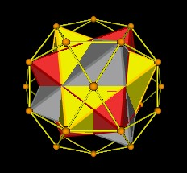

Here we provide a description and tabulation of some of the properties of the 30-Verti.
| Figure 1 The 30-Verti | |
| COUNTS | |
| Vertices | 30 | Faces | 20 Triangles 12 Pentagons |
| Edges | 60 |
Let EL = edge length of the 30-Verti.
Distance from center of volume to center of pentagon face:
Distance from center of volume to center of triangle face:
Distance from center of volume to mid-edge:
Distance from center of volume to a vertex:
Each of the 30 vertices are shared by 2 triangles and 2 pentagons.
| Fig 2 Two Triangles and Two Pentagons per vertex |
The 30-Verti is the dual polyhedron to the rhombic Triacontahedron.
| Fig 3 Green Triacontahedron daul to 30-Verti |
The ratio of the radial distance to any of the vertices (DVV) and the edge length EL (the ratio DVV/EL) is the Golden Mean.
| phi = |
Since there are 30 vertices there are 30 radial struts.
The 30 vertices are diametrically paired, thus defining 15 vertex-to-vertex spin axies. The result of a spin axis is a Great Circle. So there are 15 vertex axis Great Circles.
|
Figure 4 One spin axes (yellow) and associated great circle (blue) |
There are 30 midedge-to-midedge axies and associated Great Circles.
And there are 16 center-face-to-center-face spin axies and associated Great Circles.
The 30-Verti may be constructed by the intersection of 6 decagons.
The spherical 30-Verti is constructed from 6 intersecting Great Circles (torii in the following Figure).
|
Figure 5 Six intersecting Great Circles define the spherical 30-Verti |
The central angle is 36°.
The angles which one decagon plane intersects another decagon are
and
| Figure 6 Intersection of 2 decagons | |
Note that these angles at which the decagon planes intersect each other are also the surface angles of the spherical 30-Verti.
The dihedral angle, the angle at which two polyhedral faces intersect each other, is given by:
so the dihedral angle is DA = 142.622631...°
| Figure 7 dihedral angle | |
The 30-Verti is formed by connecting the 30 vertices of 5 intersecting Octahedra. For a discussion of these 5 Octahedra in the associated 120-Polyhedron see "What's in this Polyhedron?"
| 1 Octahedron | 2 Octahedra |
|  | |
| 3 Octahedra | 4 Octahedra |
| 5 Octahedra | 5 Octahedra |
| Figure 8 Five Octahedra in the 30-Verti | |
The 30-Verti is formed by connecting the 30 outer most vertices of Lynnclaire Dennis' "120-Polyhedron", which are the 30 vertices of 5 intersecting Octahedra.
|
Figure 9 Connecting outermost 30 vertices of the 120-Polyhedron (blue) |
|
Considering the 5 Octahedra as 5 Jitterbugs (see the article "What's in this Polyhedron?" ) we know that the Jitterbugs will form an Icosahedron such that each face of the Icosahedron is composed of 2 triangles of the 5 Jitterbugs rotating in opposite directions. From this double Icosahedron phase of the 5 Jitterbugs, the 20 pairs of triangles (40 all together) can continue to rotate and move radially outward to form the 30-Verti.
The 30-Verti can also be constructed by doubling the 12 pentagons of the Dodecahedron and rotating these 24 pentagons while moving them radially outward.
The 30 vertices may be given the following (X, Y, Z) coordinates. (The "120-Poly V. Num." is the corresponding vertex number in the 120-Polyhedron used in the coordinate tabulation of the 120-Polyhedron web page.)
Note that when using the following coordinates, the edge length (EL) of the resulting 30-Verti is EL = 2 * phi.
| Vertex Num. | 120-Poly V. Num. | X | Y | Z |
| 1 | 7 | - phi | - phi 2 | phi 3 |
| 2 | 10 | phi 3 | phi | phi 2 |
| 3 | 22 | - phi 2 | phi 3 | phi |
| 4 | 43 | phi 2 | - phi 3 | - phi |
| 5 | 49 | - phi 3 | - phi | - phi 2 |
| 6 | 55 | phi | phi 2 | - phi 3 |
| 7 | 9 | phi | - phi 2 | phi 3 |
| 8 | 14 | - phi 3 | phi | phi 2 |
| 9 | 21 | phi 2 | phi 3 | phi |
| 10 | 42 | - phi 2 | - phi 3 | - phi |
| 11 | 53 | phi 3 | - phi | - phi 2 |
| 12 | 57 | - phi | phi 2 | - phi 3 |
| 13 | 3 | phi | phi 2 | phi 3 |
| 14 | 15 | - phi 3 | - phi | phi 2 |
| 15 | 25 | phi 2 | - phi 3 | phi |
| 16 | 40 | - phi 2 | phi 3 | - phi |
| 17 | 44 | phi 3 | phi | - phi 2 |
| 18 | 59 | - phi | - phi 2 | - phi 3 |
| 19 | 5 | - phi | phi 2 | phi 3 |
| 20 | 19 | phi 3 | - phi | phi 2 |
| 21 | 24 | - phi 2 | - phi 3 | phi |
| 22 | 39 | phi 2 | phi 3 | - phi |
| 23 | 48 | - phi 3 | phi | - phi 2 |
| 24 | 61 | phi | - phi 2 | - phi 3 |
| 25 | 1 | 0 | 0 | 2 phi 2 |
| 26 | 26 | 2 phi 2 | 0 | 0 |
| 27 | 29 | 0 | 2 phi 2 | 0 |
| 28 | 32 | - 2 phi 2 | 0 | 0 |
| 29 | 35 | 0 | - 2 phi 2 | 0 |
| 30 | 62 | 0 | 0 | - 2 phi 2 |
The following table gives the edge connectivity map. Each vertex pair defines an edge.
(25, 13)(25, 7)(13, 19)(13, 2)(13, 9)(7, 20)(2, 20)
(2, 26)(20, 26)(2, 9)(9, 22)(22, 17)(26, 17)(9, 27)
(27, 22)(3, 27)(19, 3)(22, 6)(6, 12)(16, 12)(27, 16)
(3, 16)(23, 12)(16, 23)(28, 23)(8, 28)(8, 3)(19, 8)
(8, 14)(14, 28)(28, 5)(23, 5)(14, 21)(10, 5)(21, 10)
(25, 19)(1, 14)(25, 1)(1, 7)(1, 21)(21, 29)(15, 29)
(7, 15)(20, 15)(15, 4)(29, 4)(4, 11)(26, 11)(17, 11)
(17, 6)(6, 30)(24, 30)(11, 24)(4, 24)(24, 18)(10, 18)
(18, 30)(12, 30)(5, 18)(10, 29)
(25, 1, 7)(25, 13, 19)(13, 2, 9)(19, 3, 8)(3, 27, 16)
(27, 9, 22)(8, 28, 14)(28, 23, 5)(16, 12, 23)(6, 30, 12)
(18, 30, 24)(10, 5, 18)(21, 10, 29)(4, 24, 11)(15, 29, 4)
(7, 15, 20)(1, 14, 21)(2, 20, 26)(26, 11, 17)(22, 17, 6)
The following table gives the pentagon face map.
(25, 7, 20, 2, 13)(20, 15, 4, 11, 26)(2, 26, 17, 22, 9)
(13, 9, 27, 3, 19)(27, 22, 6, 12, 16)(17, 11, 24, 30, 6)
(23, 12, 30, 18, 5)(29, 10, 18, 24, 4)(8, 3, 16, 23, 28)
(14, 28, 5, 10, 21)(25, 19, 8, 14, 1)(1, 21, 29, 15, 7)
This work is copyrighted, 2003 by Robert W. Gray and Marvin Solit.
You may not use any of this material, nor any material on our linked web pages,
without first obtaining written permission.